Collatz x Taal Discovery Probe
Regime Alignment
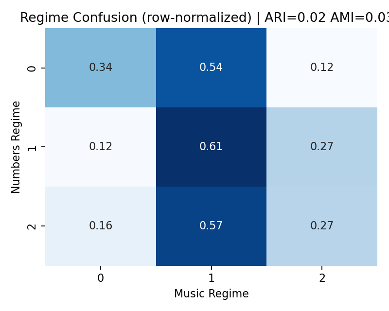Regime Centroids
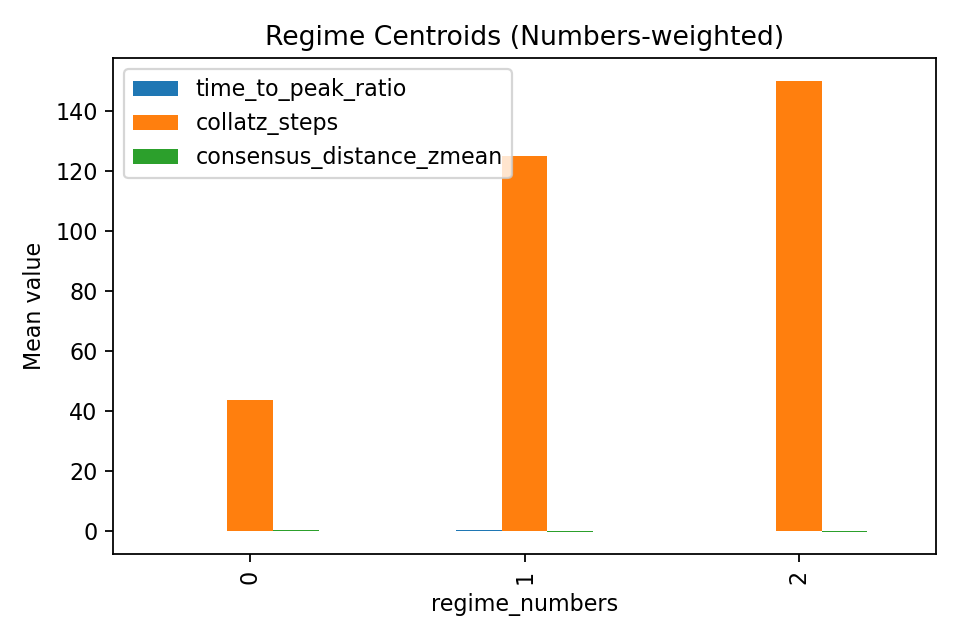
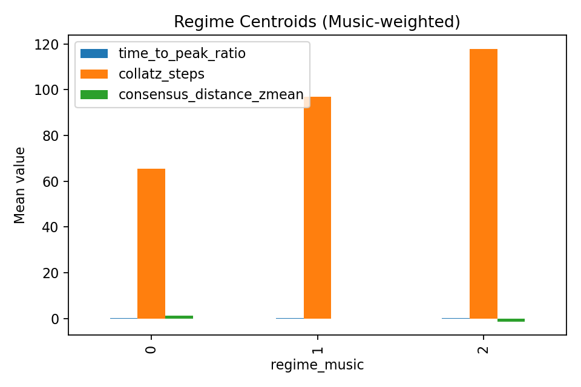Taal vs Collatz Dynamics
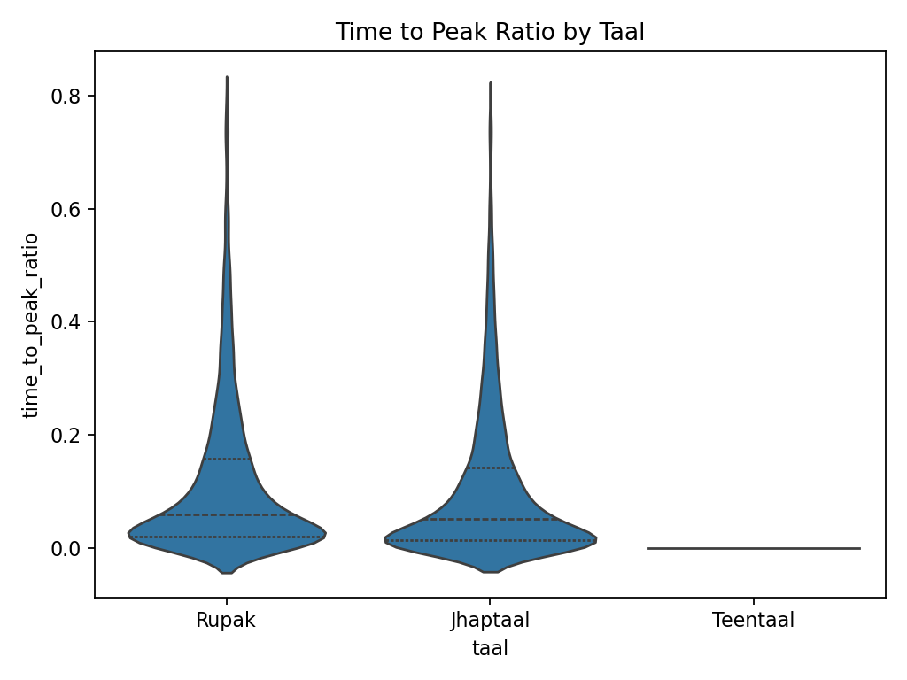
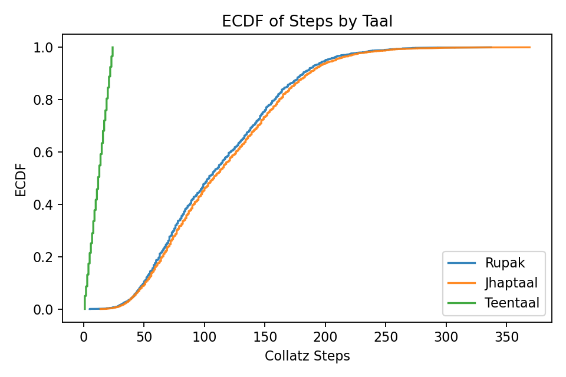Category Distributions
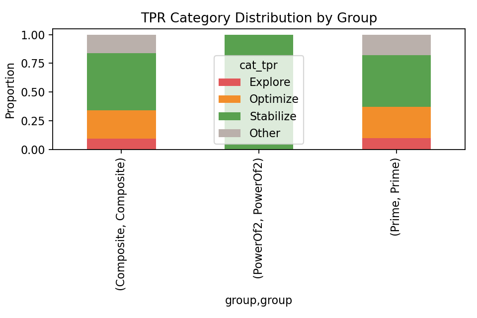
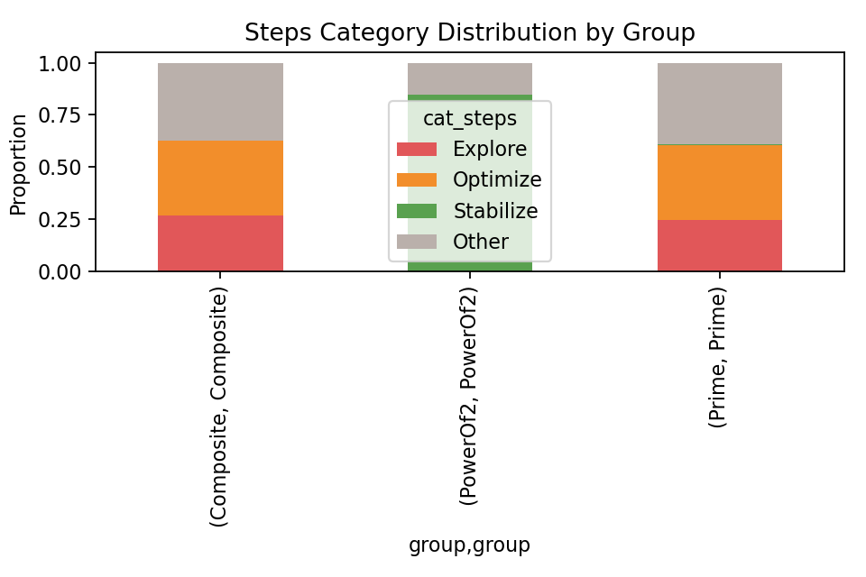Feature Space Overlays
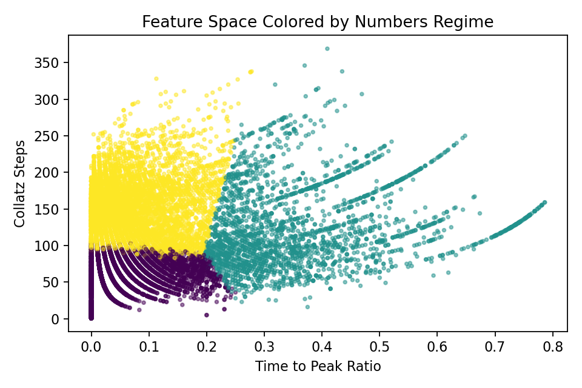
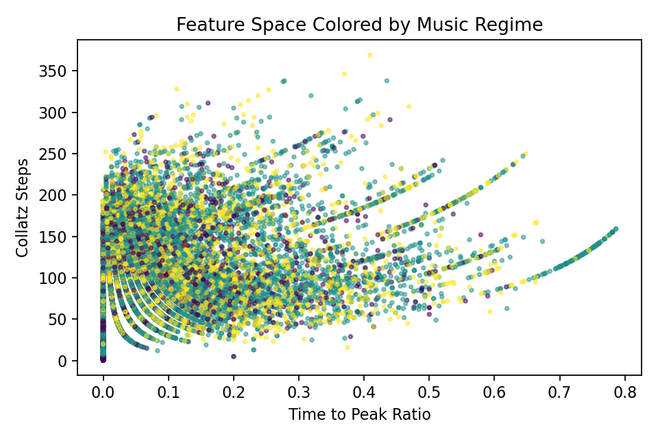Domain Weights
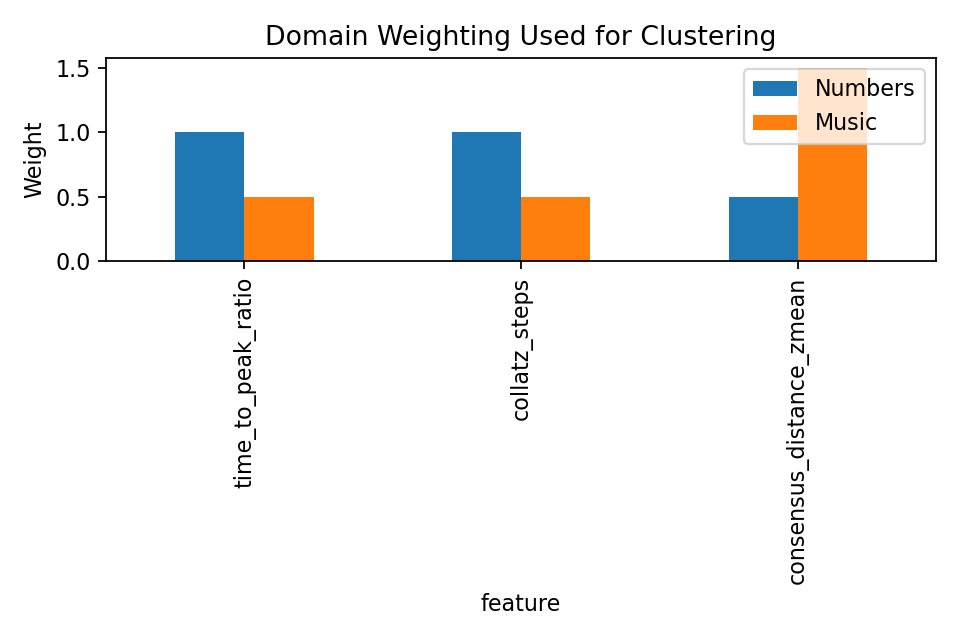Bootstrap Regime Centroids (95% CI)
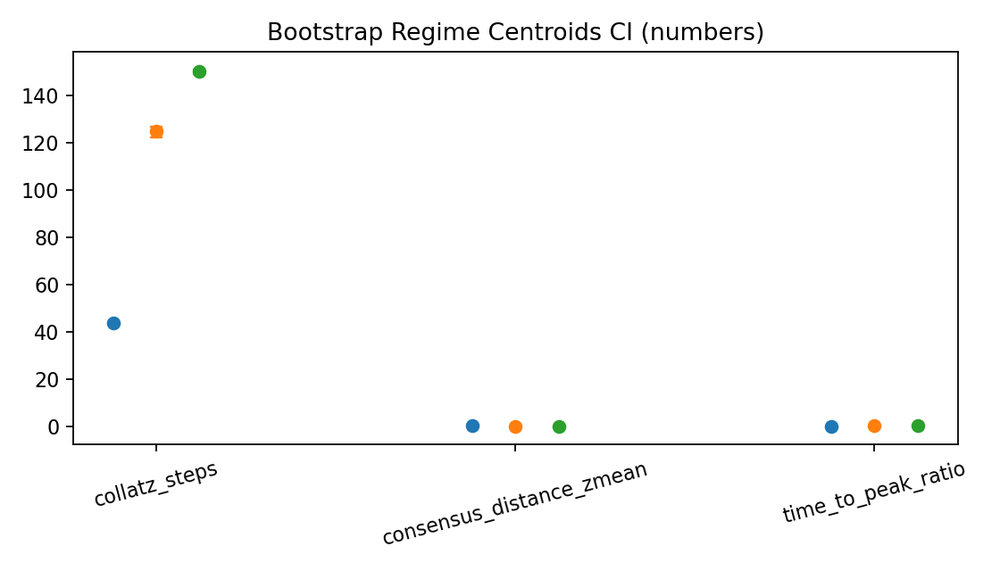
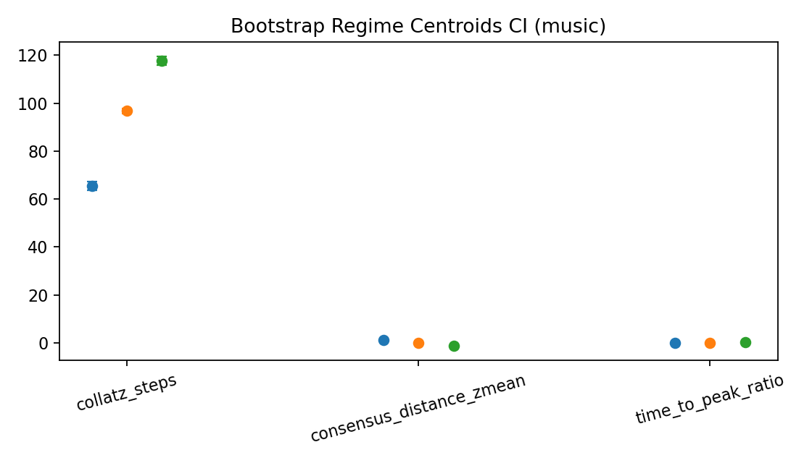SHAP vs Regime Alignment